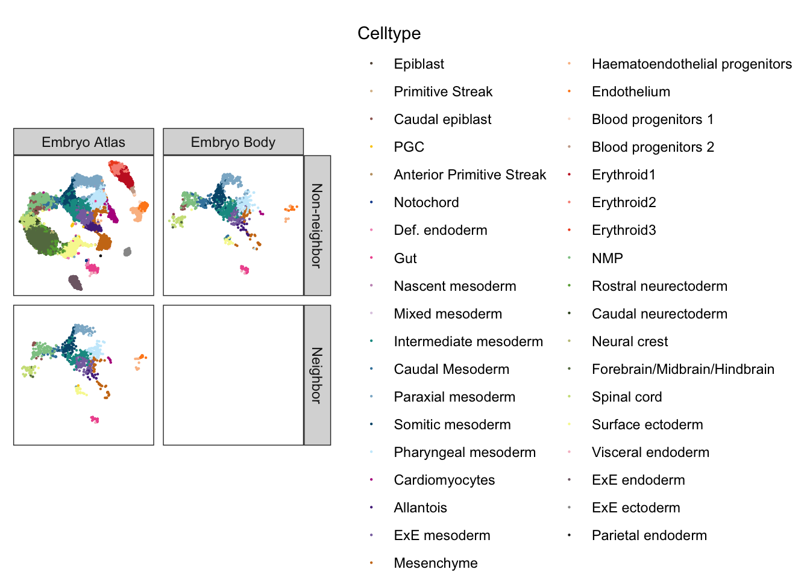
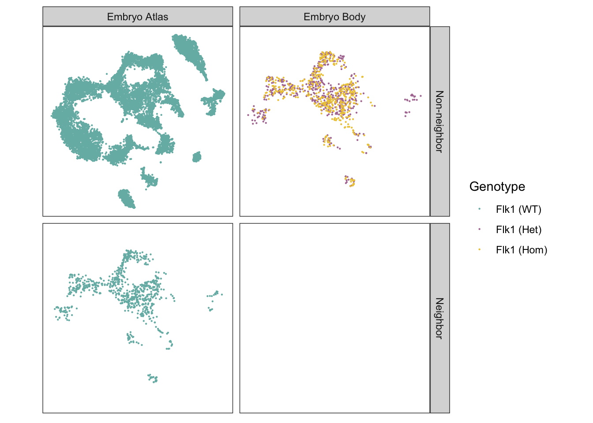
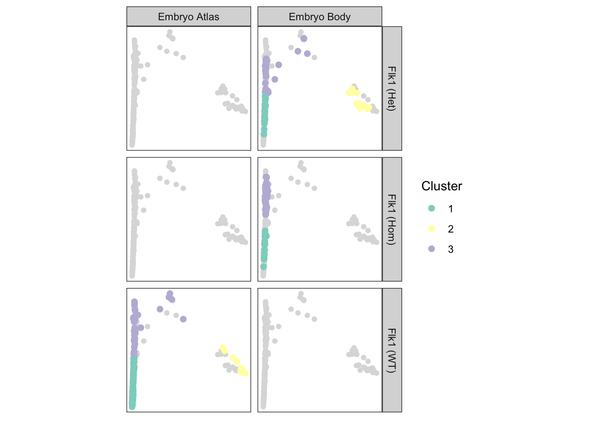
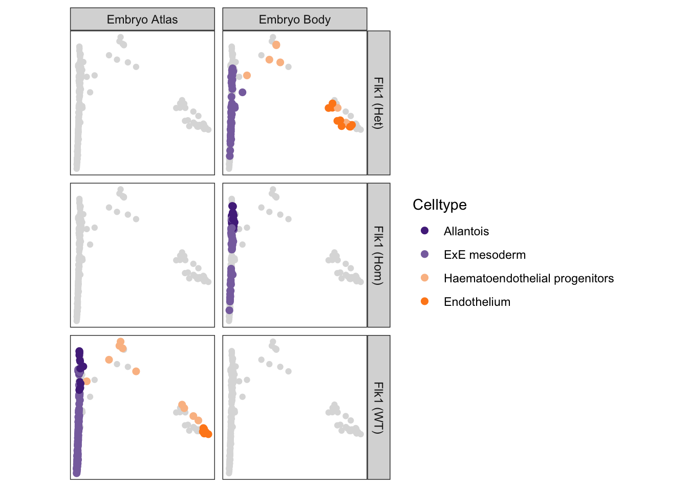
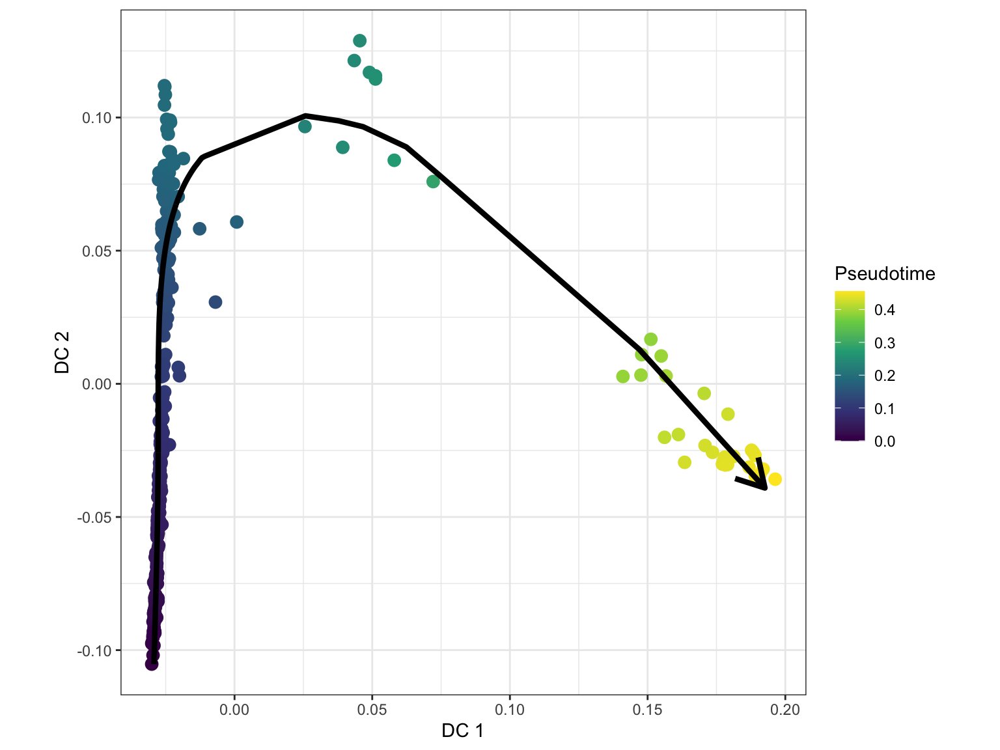
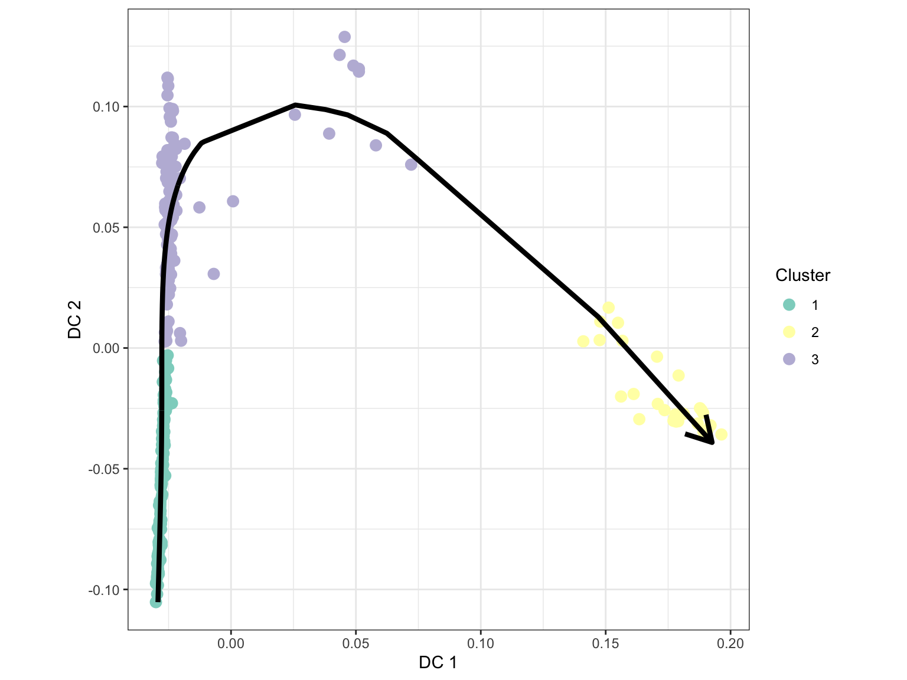
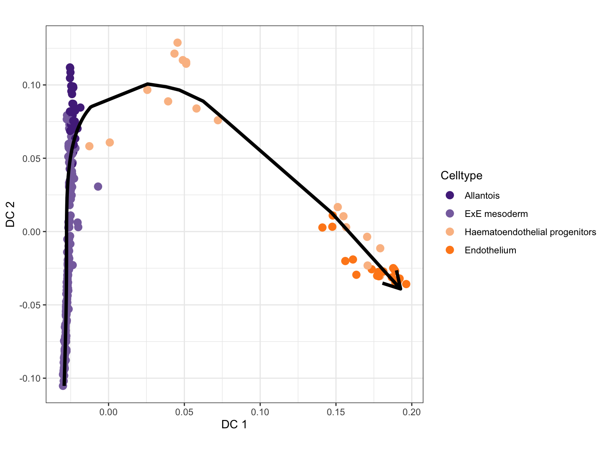
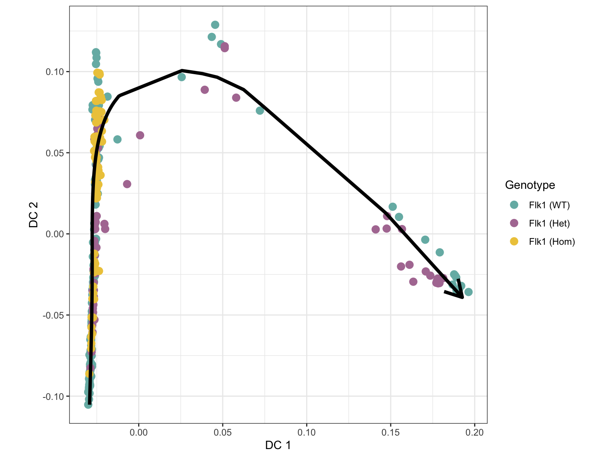
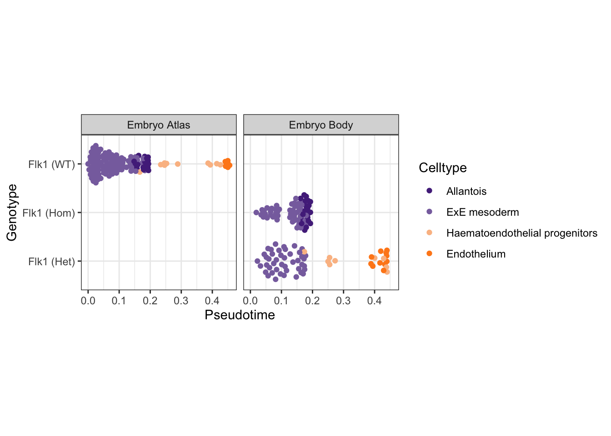

Last updated: 2021-08-09
Checks: 7 0
Knit directory: EB_KDR/
This reproducible R Markdown analysis was created with workflowr (version 1.6.2). The Checks tab describes the reproducibility checks that were applied when the results were created. The Past versions tab lists the development history.
Great! Since the R Markdown file has been committed to the Git repository, you know the exact version of the code that produced these results.
Great job! The global environment was empty. Objects defined in the global environment can affect the analysis in your R Markdown file in unknown ways. For reproduciblity it’s best to always run the code in an empty environment.
The command set.seed(20210715) was run prior to running the code in the R Markdown file. Setting a seed ensures that any results that rely on randomness, e.g. subsampling or permutations, are reproducible.
Great job! Recording the operating system, R version, and package versions is critical for reproducibility.
Nice! There were no cached chunks for this analysis, so you can be confident that you successfully produced the results during this run.
Great job! Using relative paths to the files within your workflowr project makes it easier to run your code on other machines.
Great! You are using Git for version control. Tracking code development and connecting the code version to the results is critical for reproducibility.
The results in this page were generated with repository version 9b81f21. See the Past versions tab to see a history of the changes made to the R Markdown and HTML files.
Note that you need to be careful to ensure that all relevant files for the analysis have been committed to Git prior to generating the results (you can use wflow_publish or wflow_git_commit). workflowr only checks the R Markdown file, but you know if there are other scripts or data files that it depends on. Below is the status of the Git repository when the results were generated:
Ignored files:
Ignored: .DS_Store
Ignored: .Rproj.user/
Ignored: analysis/cache/
Ignored: output/pyscenic/
Ignored: renv/.gitignore
Ignored: renv/library/
Ignored: renv/local/
Ignored: renv/settings.dcf
Ignored: renv/staging/
Ignored: shiny/
Untracked files:
Untracked: code/intersectRows.R
Untracked: code/quickCorrect.R
Unstaged changes:
Modified: _workflowr.R
Modified: analysis/_site.yml
Note that any generated files, e.g. HTML, png, CSS, etc., are not included in this status report because it is ok for generated content to have uncommitted changes.
These are the previous versions of the repository in which changes were made to the R Markdown (analysis/mouse-trajectory.Rmd) and HTML (docs/mouse-trajectory.html) files. If you’ve configured a remote Git repository (see ?wflow_git_remote), click on the hyperlinks in the table below to view the files as they were in that past version.
| File | Version | Author | Date | Message |
|---|---|---|---|---|
| html | d90ae52 | James Ashmore | 2021-08-04 | Build |
| html | 8d69807 | James Ashmore | 2021-08-04 | Build |
| Rmd | 0aa127b | James Ashmore | 2021-08-04 | Build |
| html | 1b6e7e2 | James Ashmore | 2021-08-04 | Build |
| Rmd | a0d89d9 | James Ashmore | 2021-08-04 | Build |
| Rmd | 135a00b | James Ashmore | 2021-08-02 | Build |
Setup chunk options:
knitr::opts_chunk$set(
autodep = TRUE,
cache = TRUE,
cache.path = "cache/mouse-trajectory.Rmd/",
dev = "png",
error = FALSE,
message = FALSE,
warning = FALSE,
fig.align = "center",
out.width = '100%'
)Load Bioconductor packages:
library(BiocNeighbors)
library(scater)
library(scran)
library(scuttle)
library(slingshot)Load CRAN packages:
library(RColorBrewer)
library(cluster)
library(ggbeeswarm)
library(ggforce)Source user functions:
source("code/splitByCol.R")Read experiment object:
sce <- readRDS("output/mouse-integration.rds")Define colour palettes:
EmbryoCelltypeColours <- MouseGastrulationData::EmbryoCelltypeColours
EmbryoGenotypeColours <- c("wt" = "#76B7B2", "het" = "#B07AA1", "hom" = "#EDC948")
EmbryoSourceColours <- c("atlas" = "#BAB0AC", "embryo" = "#E15759")Define informative labels:
EmbryoGenotypeLabels <- c("wt" = "Flk1 (WT)", "het" = "Flk1 (Het)", "hom" = "Flk1 (Hom)")
EmbryoSourceLabels <- c("atlas" = "Embryo Atlas", "embryo" = "Embryo Body")
EmbryoNeighborLabels <- c("TRUE" = "Neighbor", "FALSE" = "Non-neighbor")Split experiment object by source:
sce <- splitByCol(sce, sce$source)Extract corrected PCA matrix:
dim <- list(
atlas = reducedDim(sce$atlas, "corrected"),
embryo = reducedDim(sce$embryo, "corrected")
)Find the kNN in the atlas data for each point in the embryo data:
set.seed(1111100100)
knn <- queryKNN(X = dim$atlas, query = dim$embryo, k = 1)Create matrix of kNN annotations:
knn$cell <- structure(sce$atlas$cell[knn$index], .Dim = dim(knn$index))
knn$stage <- structure(sce$atlas$stage[knn$index], .Dim = dim(knn$index))
knn$celltype <- structure(sce$atlas$celltype[knn$index], .Dim = dim(knn$index))Create plotting data for exploration:
dat <- rbind(makePerCellDF(sce$atlas), makePerCellDF(sce$embryo))
dat$neighbor <- FALSE
dat$neighbor[dat$cell %in% knn$cell] <- TRUEPlot TSNE of kNN cells coloured by celltype:
ggplot(dat, aes(TSNE.1, TSNE.2, colour = celltype)) +
geom_point(size = 0.1) +
scale_colour_manual(
name = "Celltype",
values = EmbryoCelltypeColours
) +
facet_grid(
rows = vars(neighbor),
cols = vars(source),
labeller = labeller(
neighbor = EmbryoNeighborLabels,
source = EmbryoSourceLabels
)
) +
theme_no_axes() +
theme(aspect.ratio = 1)
Plot TSNE of kNN cells coloured by genotype:
ggplot(dat, aes(TSNE.1, TSNE.2, colour = genotype)) +
geom_point(size = 0.1) +
scale_colour_manual(
name = "Genotype",
values = EmbryoGenotypeColours,
labels = EmbryoGenotypeLabels
) +
facet_grid(
rows = vars(neighbor),
cols = vars(source),
labeller = labeller(
neighbor = EmbryoNeighborLabels,
source = EmbryoSourceLabels
)
) +
theme_no_axes() +
theme(aspect.ratio = 1)
Subset experiment object to embryo data and kNN atlas data:
idx <- unique(as.vector(knn$index))
sce <- cbind(sce$atlas[, idx], sce$embryo)Select cells relevant to analysis:
use <- sce$celltype %in% c("Allantois", "Endothelium", "ExE mesoderm", "Haematoendothelial progenitors")
sce <- sce[, use]Create a diffusion map from the batch-corrected PCA matrix:
set.seed(0101111001)
sce <- runDiffusionMap(sce, dimred = "corrected")Identify number of clusters to build a minimum spanning tree in slingshot:
set.seed(0001010100)
dim <- reducedDim(sce, "DiffusionMap")
fit <- clusGap(dim, kmeans, K.max = 10)
num <- maxSE(fit$Tab[, "gap"], fit$Tab[, "SE.sim"])Cluster the cells to achieve a more granular trajectory:
set.seed(0001010100)
dim <- reducedDim(sce, "DiffusionMap")
fit <- kmeans(dim, centers = num)
sce$slingClusters <- factor(fit$cluster)Setup colour palette for slingshot clusters:
EmbryoClusterColours <- brewer.pal(nlevels(sce$slingClusters), name = "Set3")
names(EmbryoClusterColours) <- levels(sce$slingClusters)Setup colour palette for slingshot celltypes:
EmbryoCelltypeColours <- MouseGastrulationData::EmbryoCelltypeColours
ind <- names(EmbryoCelltypeColours) %in% sce$celltype
EmbryoCelltypeColours <- EmbryoCelltypeColours[ind]Create plotting data for exploration:
dat <- makePerCellDF(sce)
bak <- makePerCellDF(sce, use.coldata = FALSE, use.dimred = "DiffusionMap")Plot DiffusionMap of cells coloured by cluster:
ggplot(dat, aes(DiffusionMap.1, DiffusionMap.2, colour = slingClusters)) +
geom_point(data = bak, colour = "gainsboro") +
geom_point(size = 2) +
scale_colour_manual(
name = "Cluster",
values = EmbryoClusterColours
) +
facet_grid(
rows = vars(genotype),
cols = vars(source),
labeller = labeller(
genotype = EmbryoGenotypeLabels,
source = EmbryoSourceLabels
)
) +
theme_no_axes() +
theme(aspect.ratio = 1)
Plot DiffusionMap of cells coloured by celltype:
ggplot(dat, aes(DiffusionMap.1, DiffusionMap.2, colour = celltype)) +
geom_point(data = bak, colour = "gainsboro") +
geom_point(size = 2) +
scale_colour_manual(
name = "Celltype",
values = EmbryoCelltypeColours,
drop = TRUE
) +
facet_grid(
rows = vars(genotype),
cols = vars(source),
labeller = labeller(
genotype = EmbryoGenotypeLabels,
source = EmbryoSourceLabels
)
) +
theme_no_axes() +
theme(aspect.ratio = 1)
Perform lineage inference with Slingshot:
set.seed(1010000010)
sce <- slingshot(
data = sce,
clusterLabels = sce$slingClusters,
reducedDim = "DiffusionMap",
start.clus = 1
)Construct slingshot curve for trajectory 1:
sc1 <- embedCurves(sce, "DiffusionMap")
sc1 <- slingCurves(sc1)[[1]]
sc1 <- data.frame(sc1$s[sc1$ord, ])Plot DiffusionMap of cells coloured by pseudotime 1:
ggcells(sce, aes(DiffusionMap.1, DiffusionMap.2)) +
geom_point(aes(colour = slingPseudotime_1), size = 3) +
geom_path(data = sc1, aes(DC1, DC2), size = 1.5, arrow = arrow()) +
scale_colour_viridis_c(name = "Pseudotime") +
labs(x = "DC 1", y = "DC 2") +
theme_bw() +
theme(aspect.ratio = 1)
Plot DiffusionMap of cells coloured by cluster:
ggcells(sce, aes(DiffusionMap.1, DiffusionMap.2)) +
geom_point(aes(colour = slingClusters), size = 3) +
scale_colour_manual(name = "Cluster", values = EmbryoClusterColours) +
geom_path(data = sc1, aes(DC1, DC2), size = 1.5, arrow = arrow()) +
labs(x = "DC 1", y = "DC 2") +
theme_bw() +
theme(aspect.ratio = 1)
Plot DiffusionMap of cells coloured by celltype:
ggcells(sce, aes(DiffusionMap.1, DiffusionMap.2)) +
geom_point(aes(colour = celltype), size = 3) +
scale_colour_manual(name = "Celltype", values = EmbryoCelltypeColours) +
geom_path(data = sc1, aes(DC1, DC2), size = 1.5, arrow = arrow()) +
labs(x = "DC 1", y = "DC 2") +
theme_bw() +
theme(aspect.ratio = 1)
Plot DiffusionMap of cells coloured by genotype:
ggcells(sce, aes(DiffusionMap.1, DiffusionMap.2)) +
geom_point(aes(colour = genotype), size = 3) +
scale_colour_manual(name = "Genotype", values = EmbryoGenotypeColours, label = EmbryoGenotypeLabels) +
geom_path(data = sc1, aes(DC1, DC2), size = 1.5, arrow = arrow()) +
labs(x = "DC 1", y = "DC 2") +
theme_bw() +
theme(aspect.ratio = 1)
Plot cells ordered by pseudotime 1 and coloured by celltype:
dat <- makePerCellDF(sce)
dat <- subset(dat, !is.na(slingPseudotime_1))
ggplot(dat, aes(slingPseudotime_1, genotype, colour = celltype)) +
geom_quasirandom(groupOnX = FALSE) +
scale_colour_manual(name = "Celltype", values = EmbryoCelltypeColours) +
scale_y_discrete(labels = EmbryoGenotypeLabels) +
facet_wrap(~ source, labeller = labeller(source = EmbryoSourceLabels)) +
labs(x = "Pseudotime", y = "Genotype") +
theme_bw() +
theme(aspect.ratio = 1)
Save integrated experiment object to disk:
saveRDS(sce, file = "output/mouse-trajectory.rds")Print session information:
sessionInfo()R version 4.0.2 (2020-06-22)
Platform: x86_64-apple-darwin17.0 (64-bit)
Running under: macOS Catalina 10.15.7
Matrix products: default
BLAS: /Library/Frameworks/R.framework/Versions/4.0/Resources/lib/libRblas.dylib
LAPACK: /Library/Frameworks/R.framework/Versions/4.0/Resources/lib/libRlapack.dylib
locale:
[1] en_GB.UTF-8/en_GB.UTF-8/en_GB.UTF-8/C/en_GB.UTF-8/en_GB.UTF-8
attached base packages:
[1] parallel stats4 stats graphics grDevices datasets utils
[8] methods base
other attached packages:
[1] ggforce_0.3.3 ggbeeswarm_0.6.0
[3] cluster_2.1.2 RColorBrewer_1.1-2
[5] slingshot_1.8.0 princurve_2.1.6
[7] scuttle_1.0.4 scran_1.18.7
[9] scater_1.18.6 ggplot2_3.3.5
[11] SingleCellExperiment_1.12.0 SummarizedExperiment_1.20.0
[13] Biobase_2.50.0 GenomicRanges_1.42.0
[15] GenomeInfoDb_1.26.7 IRanges_2.24.1
[17] S4Vectors_0.28.1 BiocGenerics_0.36.1
[19] MatrixGenerics_1.2.1 matrixStats_0.59.0
[21] BiocNeighbors_1.8.2 workflowr_1.6.2
loaded via a namespace (and not attached):
[1] utf8_1.2.1 tidyselect_1.1.1
[3] RSQLite_2.2.7 AnnotationDbi_1.52.0
[5] grid_4.0.2 ranger_0.13.1
[7] BiocParallel_1.24.1 munsell_0.5.0
[9] destiny_3.4.0 codetools_0.2-18
[11] statmod_1.4.36 withr_2.4.2
[13] colorspace_2.0-2 highr_0.9
[15] knitr_1.33 robustbase_0.93-8
[17] vcd_1.4-8 VIM_6.1.1
[19] TTR_0.24.2 labeling_0.4.2
[21] git2r_0.28.0 GenomeInfoDbData_1.2.4
[23] polyclip_1.10-0 bit64_4.0.5
[25] farver_2.1.0 rprojroot_2.0.2
[27] vctrs_0.3.8 generics_0.1.0
[29] xfun_0.24 ggthemes_4.2.4
[31] BiocFileCache_1.14.0 R6_2.5.0
[33] rsvd_1.0.5 RcppEigen_0.3.3.9.1
[35] locfit_1.5-9.4 bitops_1.0-7
[37] cachem_1.0.5 DelayedArray_0.16.3
[39] assertthat_0.2.1 promises_1.2.0.1
[41] scales_1.1.1 nnet_7.3-16
[43] beeswarm_0.4.0 gtable_0.3.0
[45] beachmat_2.6.4 rlang_0.4.11
[47] scatterplot3d_0.3-41 hexbin_1.28.2
[49] BiocManager_1.30.16 yaml_2.2.1
[51] abind_1.4-5 httpuv_1.6.1
[53] tools_4.0.2 ellipsis_0.3.2
[55] jquerylib_0.1.4 proxy_0.4-26
[57] Rcpp_1.0.7 sparseMatrixStats_1.2.1
[59] zlibbioc_1.36.0 purrr_0.3.4
[61] RCurl_1.98-1.3 viridis_0.6.1
[63] zoo_1.8-9 haven_2.4.1
[65] fs_1.5.0 magrittr_2.0.1
[67] data.table_1.14.0 RSpectra_0.16-0
[69] openxlsx_4.2.4 lmtest_0.9-38
[71] pcaMethods_1.82.0 whisker_0.4
[73] hms_1.1.0 mime_0.11
[75] evaluate_0.14 xtable_1.8-4
[77] smoother_1.1 rio_0.5.27
[79] readxl_1.3.1 gridExtra_2.3
[81] compiler_4.0.2 tibble_3.1.2
[83] crayon_1.4.1 htmltools_0.5.1.1
[85] later_1.2.0 tidyr_1.1.3
[87] DBI_1.1.1 tweenr_1.0.2
[89] ExperimentHub_1.16.1 dbplyr_2.1.1
[91] MASS_7.3-54 rappdirs_0.3.3
[93] boot_1.3-28 Matrix_1.3-4
[95] car_3.0-11 igraph_1.2.6
[97] forcats_0.5.1 pkgconfig_2.0.3
[99] foreign_0.8-81 laeken_0.5.1
[101] sp_1.4-5 vipor_0.4.5
[103] bslib_0.2.5.1 dqrng_0.3.0
[105] XVector_0.30.0 stringr_1.4.0
[107] digest_0.6.27 rmarkdown_2.9
[109] cellranger_1.1.0 edgeR_3.32.1
[111] DelayedMatrixStats_1.12.3 curl_4.3.2
[113] shiny_1.6.0 ggplot.multistats_1.0.0
[115] lifecycle_1.0.0 nlme_3.1-152
[117] jsonlite_1.7.2 carData_3.0-4
[119] MouseGastrulationData_1.4.0 viridisLite_0.4.0
[121] limma_3.46.0 fansi_0.5.0
[123] pillar_1.6.1 lattice_0.20-44
[125] fastmap_1.1.0 httr_1.4.2
[127] DEoptimR_1.0-9 xts_0.12.1
[129] interactiveDisplayBase_1.28.0 glue_1.4.2
[131] zip_2.2.0 bluster_1.0.0
[133] BiocVersion_3.12.0 bit_4.0.4
[135] class_7.3-19 stringi_1.7.2
[137] sass_0.4.0 blob_1.2.1
[139] RcppHNSW_0.3.0 BiocSingular_1.6.0
[141] AnnotationHub_2.22.1 memoise_2.0.0
[143] renv_0.13.2 dplyr_1.0.7
[145] knn.covertree_1.0 irlba_2.3.3
[147] e1071_1.7-7 ape_5.5
sessionInfo()R version 4.0.2 (2020-06-22)
Platform: x86_64-apple-darwin17.0 (64-bit)
Running under: macOS Catalina 10.15.7
Matrix products: default
BLAS: /Library/Frameworks/R.framework/Versions/4.0/Resources/lib/libRblas.dylib
LAPACK: /Library/Frameworks/R.framework/Versions/4.0/Resources/lib/libRlapack.dylib
locale:
[1] en_GB.UTF-8/en_GB.UTF-8/en_GB.UTF-8/C/en_GB.UTF-8/en_GB.UTF-8
attached base packages:
[1] parallel stats4 stats graphics grDevices datasets utils
[8] methods base
other attached packages:
[1] ggforce_0.3.3 ggbeeswarm_0.6.0
[3] cluster_2.1.2 RColorBrewer_1.1-2
[5] slingshot_1.8.0 princurve_2.1.6
[7] scuttle_1.0.4 scran_1.18.7
[9] scater_1.18.6 ggplot2_3.3.5
[11] SingleCellExperiment_1.12.0 SummarizedExperiment_1.20.0
[13] Biobase_2.50.0 GenomicRanges_1.42.0
[15] GenomeInfoDb_1.26.7 IRanges_2.24.1
[17] S4Vectors_0.28.1 BiocGenerics_0.36.1
[19] MatrixGenerics_1.2.1 matrixStats_0.59.0
[21] BiocNeighbors_1.8.2 workflowr_1.6.2
loaded via a namespace (and not attached):
[1] utf8_1.2.1 tidyselect_1.1.1
[3] RSQLite_2.2.7 AnnotationDbi_1.52.0
[5] grid_4.0.2 ranger_0.13.1
[7] BiocParallel_1.24.1 munsell_0.5.0
[9] destiny_3.4.0 codetools_0.2-18
[11] statmod_1.4.36 withr_2.4.2
[13] colorspace_2.0-2 highr_0.9
[15] knitr_1.33 robustbase_0.93-8
[17] vcd_1.4-8 VIM_6.1.1
[19] TTR_0.24.2 labeling_0.4.2
[21] git2r_0.28.0 GenomeInfoDbData_1.2.4
[23] polyclip_1.10-0 bit64_4.0.5
[25] farver_2.1.0 rprojroot_2.0.2
[27] vctrs_0.3.8 generics_0.1.0
[29] xfun_0.24 ggthemes_4.2.4
[31] BiocFileCache_1.14.0 R6_2.5.0
[33] rsvd_1.0.5 RcppEigen_0.3.3.9.1
[35] locfit_1.5-9.4 bitops_1.0-7
[37] cachem_1.0.5 DelayedArray_0.16.3
[39] assertthat_0.2.1 promises_1.2.0.1
[41] scales_1.1.1 nnet_7.3-16
[43] beeswarm_0.4.0 gtable_0.3.0
[45] beachmat_2.6.4 rlang_0.4.11
[47] scatterplot3d_0.3-41 hexbin_1.28.2
[49] BiocManager_1.30.16 yaml_2.2.1
[51] abind_1.4-5 httpuv_1.6.1
[53] tools_4.0.2 ellipsis_0.3.2
[55] jquerylib_0.1.4 proxy_0.4-26
[57] Rcpp_1.0.7 sparseMatrixStats_1.2.1
[59] zlibbioc_1.36.0 purrr_0.3.4
[61] RCurl_1.98-1.3 viridis_0.6.1
[63] zoo_1.8-9 haven_2.4.1
[65] fs_1.5.0 magrittr_2.0.1
[67] data.table_1.14.0 RSpectra_0.16-0
[69] openxlsx_4.2.4 lmtest_0.9-38
[71] pcaMethods_1.82.0 whisker_0.4
[73] hms_1.1.0 mime_0.11
[75] evaluate_0.14 xtable_1.8-4
[77] smoother_1.1 rio_0.5.27
[79] readxl_1.3.1 gridExtra_2.3
[81] compiler_4.0.2 tibble_3.1.2
[83] crayon_1.4.1 htmltools_0.5.1.1
[85] later_1.2.0 tidyr_1.1.3
[87] DBI_1.1.1 tweenr_1.0.2
[89] ExperimentHub_1.16.1 dbplyr_2.1.1
[91] MASS_7.3-54 rappdirs_0.3.3
[93] boot_1.3-28 Matrix_1.3-4
[95] car_3.0-11 igraph_1.2.6
[97] forcats_0.5.1 pkgconfig_2.0.3
[99] foreign_0.8-81 laeken_0.5.1
[101] sp_1.4-5 vipor_0.4.5
[103] bslib_0.2.5.1 dqrng_0.3.0
[105] XVector_0.30.0 stringr_1.4.0
[107] digest_0.6.27 rmarkdown_2.9
[109] cellranger_1.1.0 edgeR_3.32.1
[111] DelayedMatrixStats_1.12.3 curl_4.3.2
[113] shiny_1.6.0 ggplot.multistats_1.0.0
[115] lifecycle_1.0.0 nlme_3.1-152
[117] jsonlite_1.7.2 carData_3.0-4
[119] MouseGastrulationData_1.4.0 viridisLite_0.4.0
[121] limma_3.46.0 fansi_0.5.0
[123] pillar_1.6.1 lattice_0.20-44
[125] fastmap_1.1.0 httr_1.4.2
[127] DEoptimR_1.0-9 xts_0.12.1
[129] interactiveDisplayBase_1.28.0 glue_1.4.2
[131] zip_2.2.0 bluster_1.0.0
[133] BiocVersion_3.12.0 bit_4.0.4
[135] class_7.3-19 stringi_1.7.2
[137] sass_0.4.0 blob_1.2.1
[139] RcppHNSW_0.3.0 BiocSingular_1.6.0
[141] AnnotationHub_2.22.1 memoise_2.0.0
[143] renv_0.13.2 dplyr_1.0.7
[145] knn.covertree_1.0 irlba_2.3.3
[147] e1071_1.7-7 ape_5.5